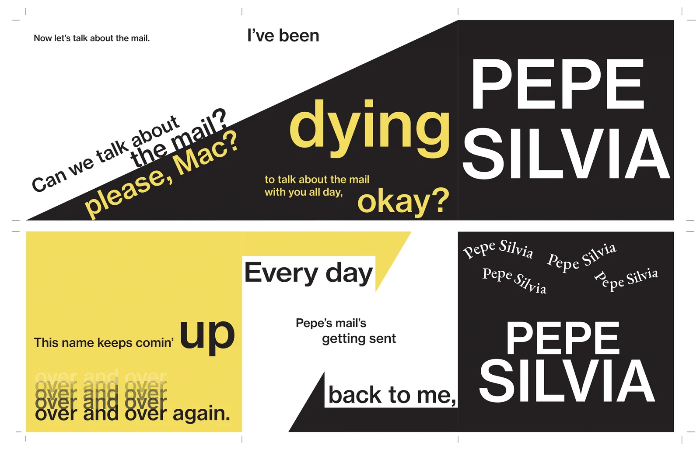
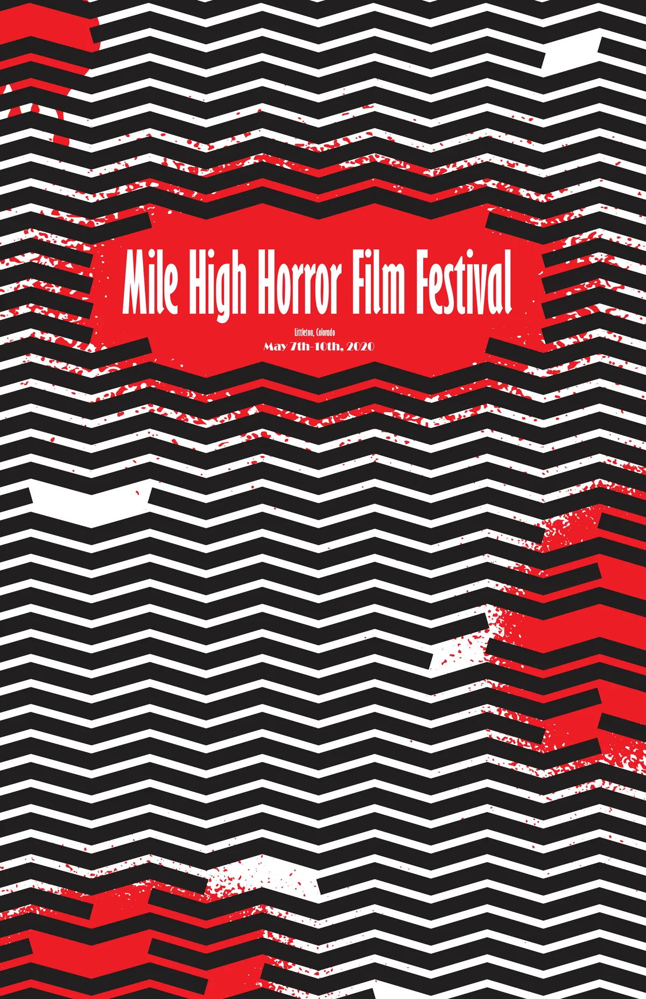
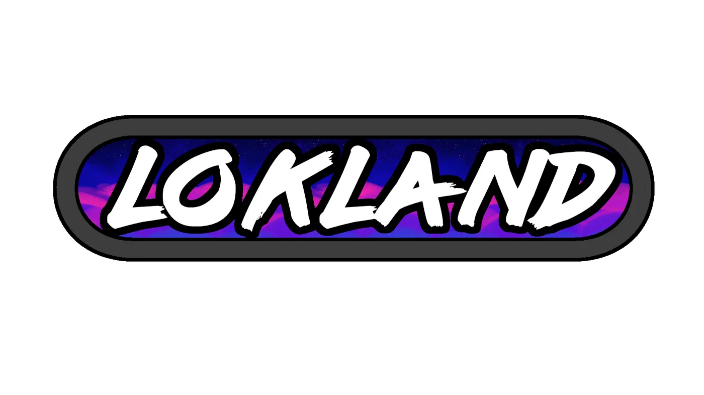
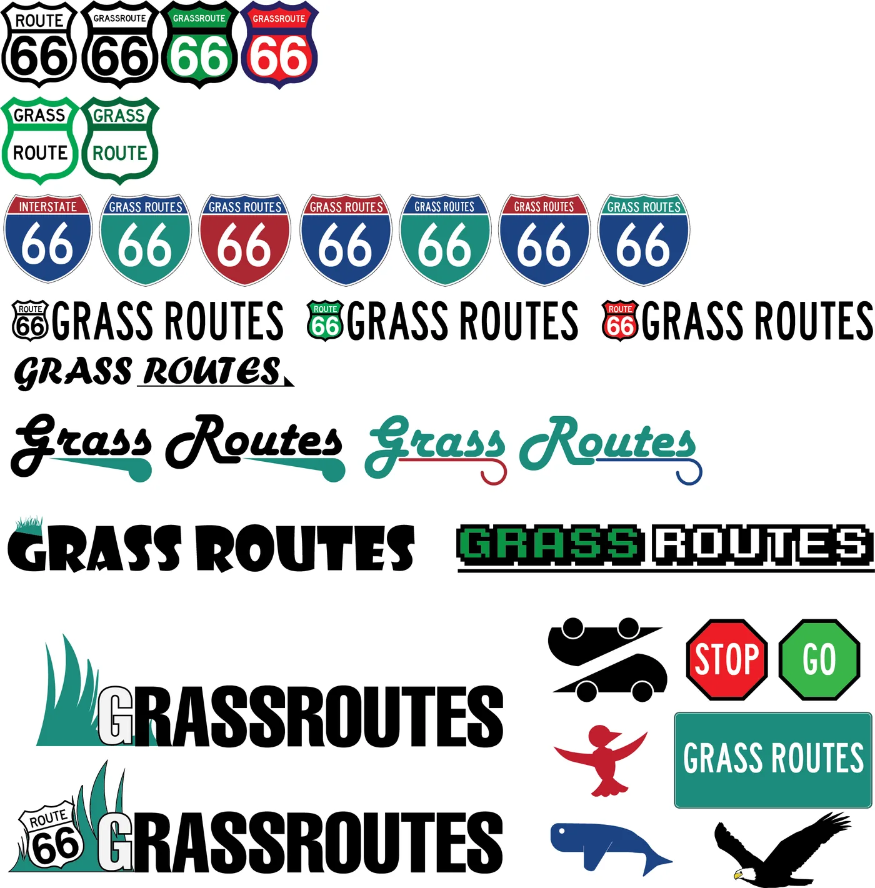
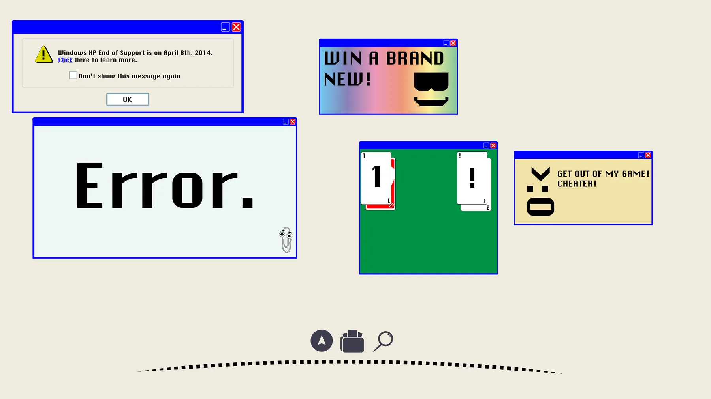
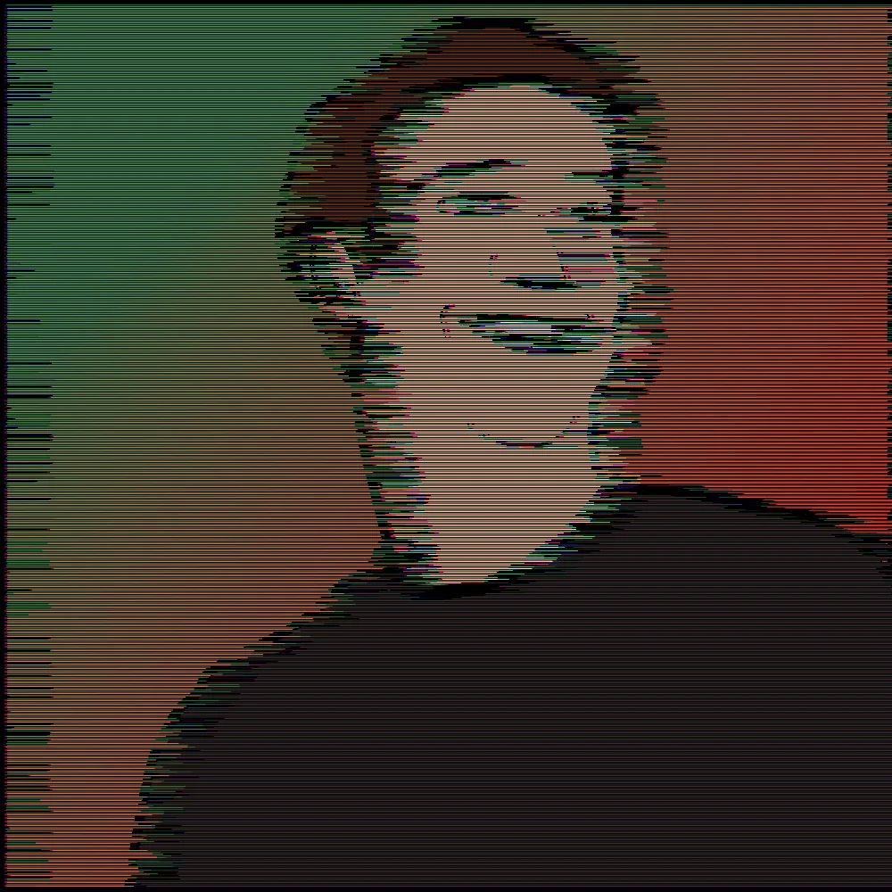
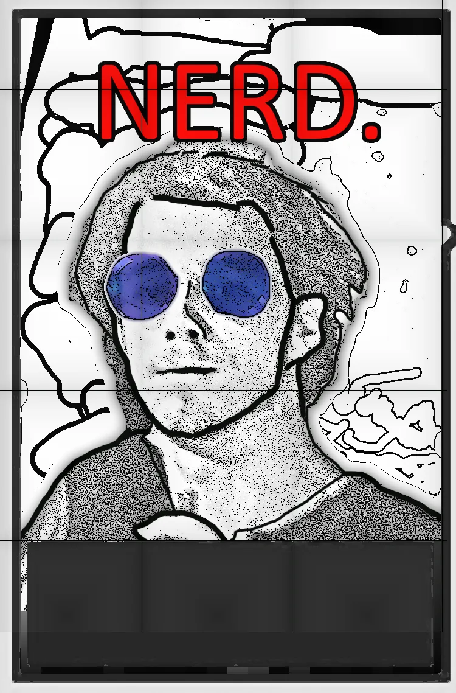

← All work
Graphic Design
Graphic Design
Class projects from CU Boulder’s ATLAS program, commissions and personal pieces.
ATLAS Text
Accordion book
An experiment in visually representing text in as interesting a way as possible. Like the rest of my ATLAS work, it was made under tight time constraints. View the full PDF.

ATLAS Text
Mile High Horror Film Festival
A poster for a horror film festival in Littleton, CO. I went for a minimalist approach that still catches the eye from a distance and speaks to horror fans. View the PDF.

Commissions
Logos & brand concepts
Work for YouTubers and a Boulder-based nonprofit startup.



Personal
Hobby pieces
Illustration and cover art made for fun.



